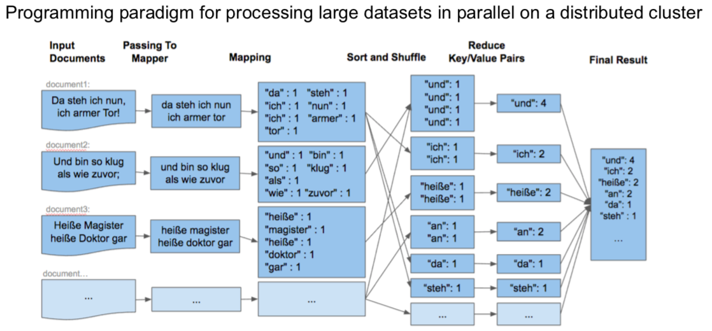
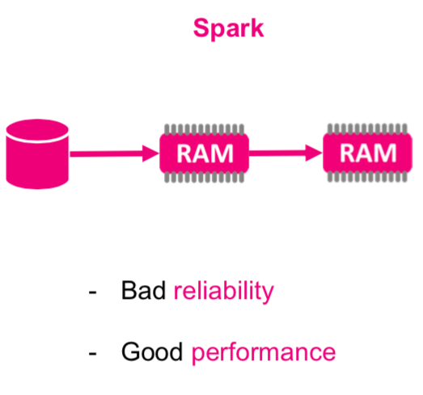
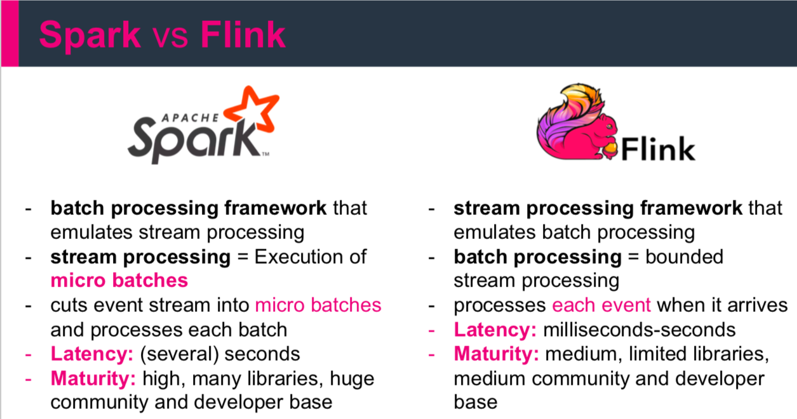
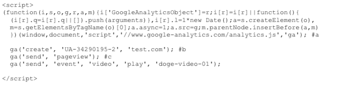

Lecture 2 - Time to Stream
Batch vs Stream Processing
Expectations vs Reality

When to take a business decision?
Data Processing Types
- Batch = Big, historical datasets
- Stream = stream data, online, generated and send continuously
Processing start time
- Batch = minutes, hours, days (Data warehouses)
- Stream = Real-time/near-real-time
Reprocessing
- Batch = possible and used very often
- Stream = ,,impossible’’

ETL
Extract, Transform, Load is a basic pattern for data processing, commonly known in data warehousing. It’s all about extracting data from a source, transforming the data (business rules) and at the end writing/loading everything to a target (Hadoop, Relational Database, Data Warehouse etc.)
Big Data
Big Data system can be a part of (source of) data warehouses (ex. Data Lake, Enterprise Data Hub)
But Data Warehouses are not Big Data Systems!
- Data warehouses
- highly structured data retention
- focused on the analysis and reporting process
- 100 % accuracy
- Big Data
- data of any structure
- serves a variety of data-driven purposes (analytics, data science …)
- less than 100 % accuracy

ELT process
ELT process is similar to ETL and has the same stages involved, but the order of performing ETL stages is different. Extract data from one or many sources and Load it to the destination system for example “data lake”. After that, You can Transform Your data a more dynamically on demand.
Use Case: - Demanding scalability requirements of Big Data - Streaming analytics - Integration of highly distributed data sources - Multiple data products from the same sources
ELT is an emerging trend: - Big Data -> Cloud computing - ELT separates the data pipeline from processing - More flexibility - No information loss (by transformations)
Difference between ETL and ELT
- Transformations for ETL happen within the data pipeline
- Transformations for ELT happen in the destination environment
- ETL is rigid - pipelines are engineered to user specifications
- ELT is flexible - end users build their transformations
- Organizations use ETL for relational data, on-premise - scalability is difficult
- ELT solves scalability problems, handling both structured and unstructured Big Data in the cloud
- ETL workflows take time to specify and develop
- ELT supports self-serve, interactive analytics in real time
ELT is the evolution of ETL! - increasing demand for access to raw data.
ETL still has its place for many applications: - Lengthy time-to-insight - Challenges imposed by Big Data - Demand for access to siloed information
Data Extraction Techniques
Examples of raw data sources: - Paper documents - Web pages - Analog audio/video - Survey, statistics, economics - Transactional data - Social media - Weather station networks - IoT - Medical records - Human genomes
Data extraction techniques include: - OCR - ADC sampling, CCD sampling - Mail, phone, or in-person surveys and polls - Cookies, user logs - Web scraping - API’s - Database querying - Edge computing - Biomedical devices
Data Transformation Techniques
can involve various operations, such as: - Data typing - Data structuring - Anonymizing, encrypting - Cleaning: duplicate records, missing values - Normalizing: converting data to common units - Filtering, sorting, aggregating, binning - Joining data sources
Schema-on-write
is the conventional ETL approach: - Consistency and efficiency - Limited versatility
Schema-on-read
applies to the modern ELT approach: - Versatility - Enhanced storage flexibility = more data
Transformed data could be loss information. - data compression - filtering - aggregation - Edge computing devices
Data Load Techniques
- Full
- Incremental
- Scheduled
- ON-demand
- Batch and stream
- push and pull
- parallel and serial
Hadoop Map-Reduce

Find a simple map-reduce algorithm in any programming language and run it.

How to improve?
APACHE SPARK


Stream of Data
Check Your knowledge with streaming data
Definition - Event is everything that we can observe at a certain moment in time (pure physics). Define - In the case of data, event is understood as an unchangeable record in the data stream encoded as JSON, XML, CSV or binary.
Which of the following statements do not represent events?
- It was a warm day.
- The API client did not work.
- The API client stopped working at midnight.
- The car was black.
- Murzynek was tasty.
- In 2013, the NASDAQ exchange opened at 9:30 am every day.
Definition - A continuous stream of events is an infinite set of individual events arranged in time, e.g. logs from a device.
Systems for continuous streams of events:
- Transaction systems - e.g. purchase/sale
- Data warehouses - store the history of events for later analysis (Fact Table).
- Data from sensors: Monitoring systems, IoT, any API (Twitter), queuing systems (Kafka),
- Location tracking
- User interaction: what are your site visitors doing?
- Mobile devices
- Cloud applications
- web browsers

- Web server logs
- Recommendation systems (personalization)
Streaming analytics allows you to quickly catch trends and stay ahead of the competition that uses only batch processing. Reacting to sudden events on the stock market or in social networks to prevent or minimize losses.
- which vehicle of the company’s fleet is almost empty and - where to send the driver for refuelling.
- Which vehicle in your fleet consumes the most fuel and why?
- Which equipment in the plant or the factory may fail in the coming days?
- What spare parts will you need to replace and on which machines in shortly?
- How many customers are currently shopping in the store and can you offer them something?
- Is the customer calling to terminate the contract?
- and many others.
An enterprise is an organization that generates and responds to a continuous stream of events.
Data Streams - Definitions
Definition - Data stream is data created incrementally over time, generated from static data (database, reading lines from a file) or dynamically (logs, sensors, functions).
Streaming analytics is also called event stream processing - processing large amounts of data already at the stage of their generation.
They are generated as a direct result of an action.
Regardless of the technology used, all data is created as a continuous stream of events (user actions on the website, system logs and measurements from sensors).
Find a process that creates an entire data table at once.
The application that processes the stream of events should enable the processing and saving of the event and access (at the same time) other data so that it can process the event (perform any conversion on it) and save it as a local state. This state can be saved in many places, eg program variables, local files, ext, and ext of the database. One of the most famous applications of this type is Apache Kafka, which can be combined with e.g. Apache Spark or Apache Flink.
Find info on how to log processing systems work.
These types of applications are used in three classes of applications:
- event-driven applications
- data pipeline applications
- data analytics applications
Real implementations most often use several classes in one application.
Event-driven apps
All Event-driven applications process data as Stateful stream processing, processing events with a certain set (mostly business) logic. These applications can trigger actions in response to the analyzed events, e.g. send an alarm in the form of a text message or email, save and forward the appropriate event (e.g. fraud) to the output application (consumer).
Standard applications for this type of application are:
- Real-time recommendations - e.g. while browsing websites
- Pattern detection or complex analysis, eg fraud detection in credit card transactions.
- Anomaly detection - detection of intrusions in a computer network
Applications of this type are treated as a natural evolution of microservices. They communicate with each other using REST requests (be sure to check where you are using them !!!) with the use of straightforward data. They also use data in the form of JSON.
What is REST?
Log communication (usually asynchronous) distinguishes the sending application (producer) and the consuming application (consumer).
What is asynchronous communication?
Data Pipelines
The data generated by companies are most often stored in many different formats and data structures, which is related to the use of various systems e.g. relational and non-relational databases, event logging, file systems (e.g. Hadoop), storage in memory etc. Recording the same data in different systems increases their availability and ease of processing.
However, this approach requires that these systems are always synchronized with each other (containing the same data).
The traditional approach to data synchronization is to perform ETL tasks periodically. However, they very often do not meet the performance and quality assumptions (processing time). Alternatively, you can use the information distributed in the event logs. In this situation, data aggregation or normalization can be performed only during the processing of a given event.
We call these types of applications, which allow achieving very high performance (low latency), data pipelines. In general, these are applications that read a lot of data from various input applications and process everything in a very short time (e.g. Kafka, Apache Flink).
Data analytics applications (streaming analytics)
ETL jobs periodically (and periodically over time) import data into the database, with the data being processed by scheduled queries. Regardless of the data warehouse architecture (or components such as Hadoop), this processing is ‘batch’. Analytical processes (OLAP) are performed in the warehouse, which is supplemented as described above. Although periodic data completion (i.e. the entire ETL process) is a kind of ‘art’, it introduces considerable delays in the analytical process. Depending on the data upload schedule, the next data point may appear after an hour or even several days. Even in the case of continuous replenishment of the warehouse (data pipeline app), there is still a significant delay in the analytical polling of such a database. While such delays were acceptable in the past, today’s applications must collect, process and analyze data in real-time (personalizing user behaviour on websites or dynamically changing conditions in mobile games).
Instead of waiting for periodic triggers, the streaming application continuously downloads event streams and updates the results to include the latest events with low latency. Streaming applications store their results in an external datastore that supports efficient updates (high-performance database or key-value database). Streaming application performance refreshed life can feed into various types of graphs (shown live).

Streaming Analytics Applications are used in:
- Monitoring the quality of telephone networks
- Behavioral analysis of mobile application users
- …